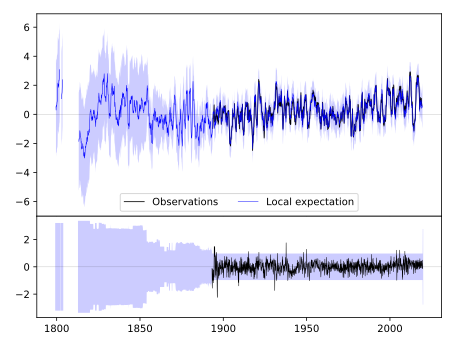
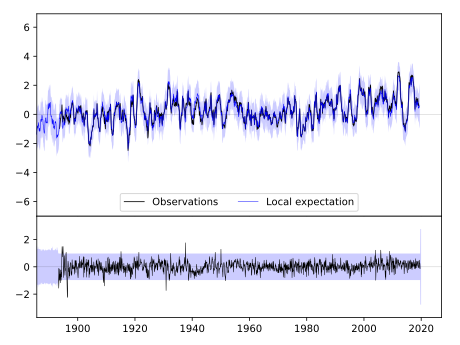
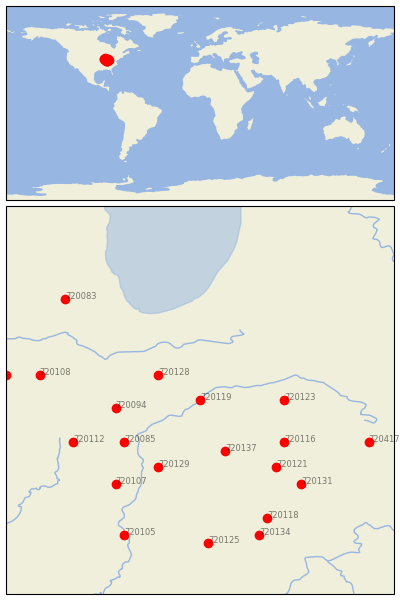

DELPHI 2 N [USA]


| Neighbour | Name | Country | Distance | Lon/Lat | Years |
|---|
| 720119 | DELPHI 2 N | USA | 0 | -86.7, 40.6 | 1893-2019 |
| 720128 | RENSSELAER | USA | 53 | -87.2, 40.9 | 1864-2019 |
| 720137 | WHITESTOWN | USA | 71 | -86.4, 40.0 | 1893-2019 |
| 720123 | MARION 2 N | USA | 84 | -85.7, 40.6 | 1885-2019 |
| 720094 | HOOPESTON 1 NE | USA | 85 | -87.7, 40.5 | 1887-2019 |
| 720085 | DANVILLE | USA | 94 | -87.6, 40.1 | 1893-2019 |
| 720129 | ROCKVILLE | USA | 98 | -87.2, 39.8 | 1862-2019 |
| 720116 | ANDERSON SEWAGE PLT | USA | 101 | -85.7, 40.1 | 1893-2019 |
| 720121 | GREENFIELD | USA | 117 | -85.8, 39.8 | 1893-2019 |
| 720112 | URBANA | USA | 138 | -88.2, 40.1 | 1888-2019 |
| 720107 | PARIS WTR WKS | USA | 140 | -87.7, 39.6 | 1886-2019 |
| 720131 | RUSHVILLE | USA | 150 | -85.5, 39.6 | 1883-2019 |
| 720108 | PONTIAC | USA | 163 | -88.6, 40.9 | 1886-2019 |
| 720118 | COLUMBUS | USA | 169 | -85.9, 39.2 | 1884-2019 |
| 720417 | GREENVILLE WTP | USA | 178 | -84.7, 40.1 | 1886-2019 |
| 720134 | SEYMOUR 2 N | USA | 187 | -86.0, 39.0 | 1887-2019 |
| 720083 | AURORA | USA | 189 | -88.3, 41.8 | 1857-2019 |
| 720125 | OOLITIC PURDUE EX FR | USA | 189 | -86.6, 38.9 | 1893-2019 |
| 720105 | PALESTINE | USA | 193 | -87.6, 39.0 | 1882-2019 |
| 720099 | MINONK | USA | 196 | -89.0, 40.9 | 1886-2019 |